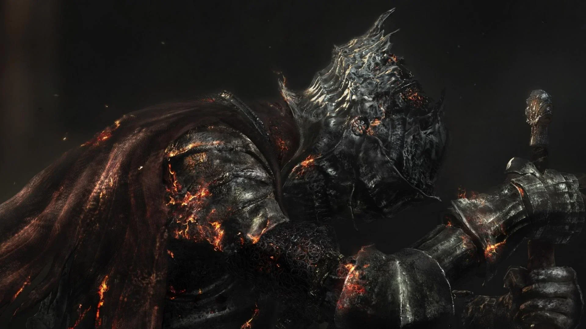

Credits & References
The sources, creators, and communities this site draws from.
Our Sources & Inspirations
The Undying Flame draws inspiration from numerous sources across the internet. We're grateful to the Soulslike community, content creators, and official sources that have shaped our understanding of these captivating games. Below, we acknowledge the references and resources that contributed to this site.